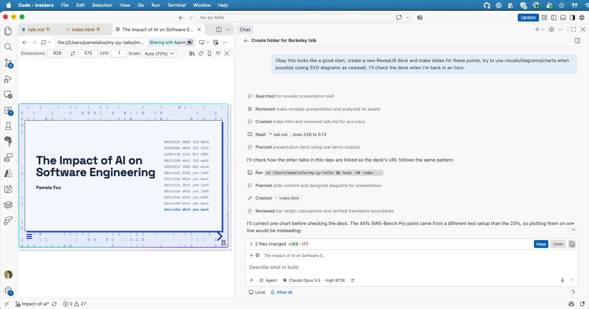
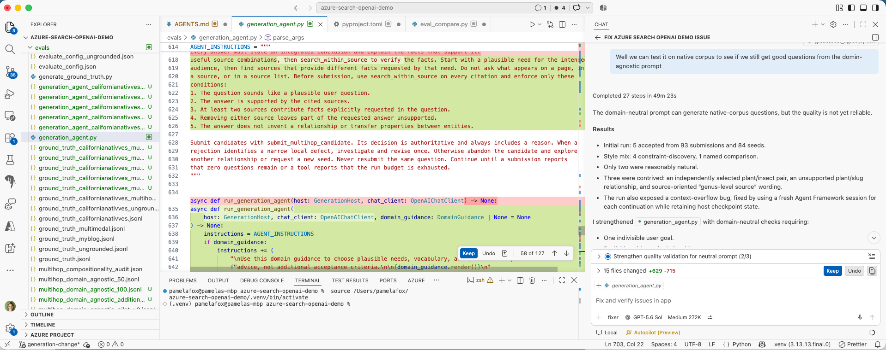
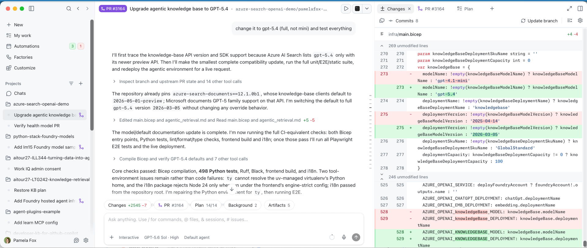
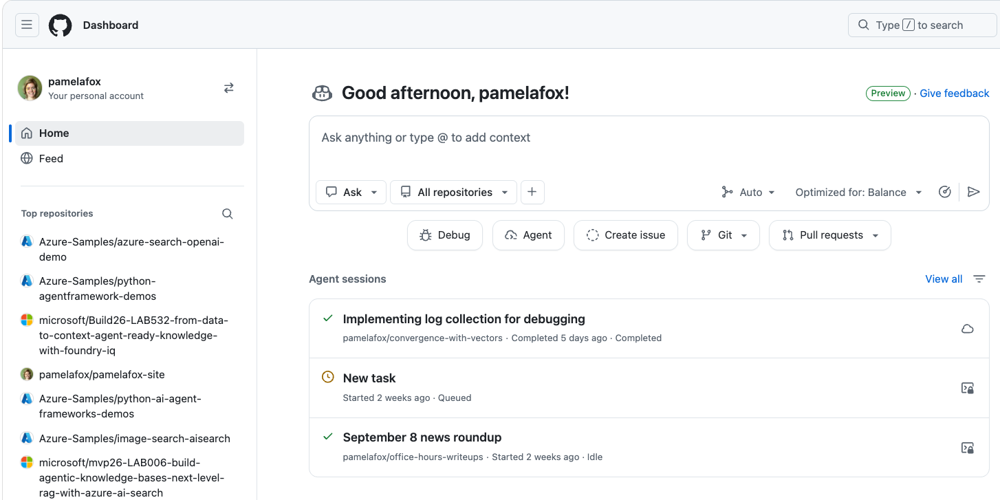
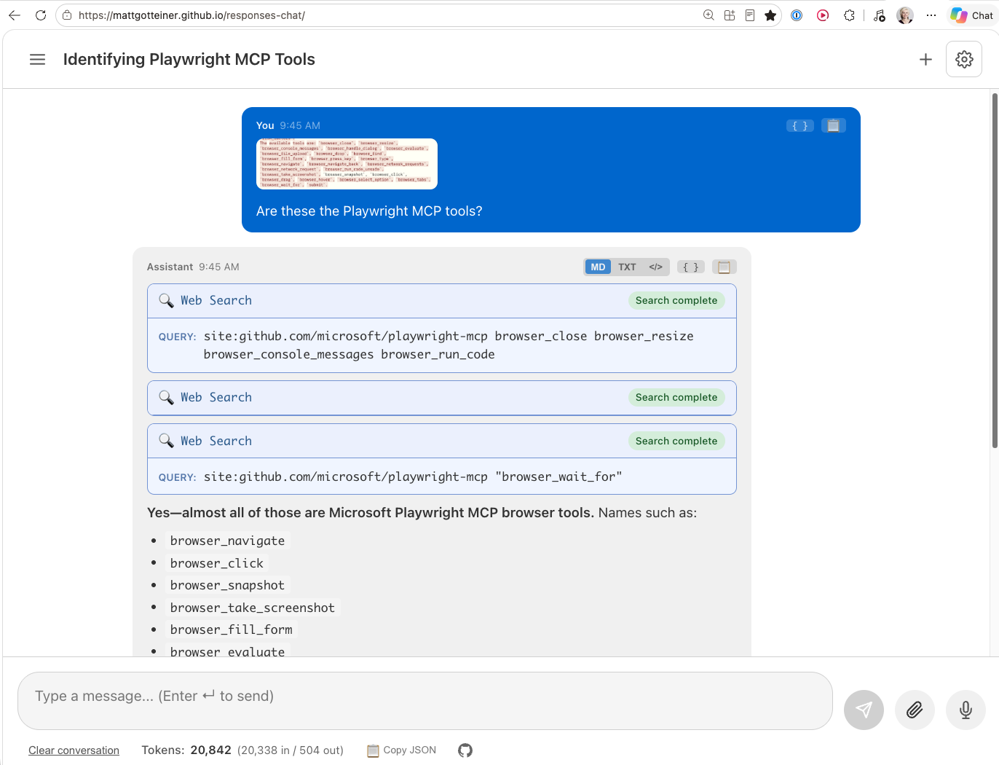

About me
Pamela Fox
Principal Cloud Advocate at
Microsoft / GitHub
Formerly: UC Berkeley, Coursera,
Khan Academy, Google
| 🔗 @pamelafox | |
| 🔗 linkedin.com/in/pamela-s-fox | |
| GitHub | 🔗 github.com/pamelafox |
| Website | 🔗 pamelafox.org |

The two big impacts of AI on software
Generative AI models
LLMs that generate text, code, images, and more
Built ON AI
Software now runs on top of probabilistic AI models
Built BY AI
Software is now written largely by those models
Software is now built on top of probabilistic AI models
Deterministic vs. probabilistic
AI engineering is mostly about constraining, grounding, and evaluating that output.
Building on AI models: Core concepts
Models
LLMs
Same prompt, different output
More models
Images, embeddings, voice
Fine-tuning
Train a model on your own data
Outputs & actions
Structured outputs
Constrain to a schema
Tool calling
The LLM asks your code to run a function
Agents
Tool calling in a loop
Building apps
Context engineering
Give the LLM the right context
Evaluations
“Test” probabilistic output
Safety
Guard against harmful output
LLMs: same prompt, different output
client = openai.OpenAI(
base_url="http://localhost:11434/v1",
api_key="ollama")
response = client.chat.completions.create(
model="gpt-oss:20b",
messages=[{"role": "user",
"content": "Write a haiku about recursion"}])
print(response.choices[0].message.content)
Run 1
Run 2
Context engineering
Sending context to the LLM to personalize the response and ground responses in domain-specific data.
RAG: Retrieval-Augmented Generation
What's in the LLM's weights
- Frozen at a training cutoff date
- Mostly public internet data
- Can't point to its sources
- Fills gaps by guessing
What retrieval adds
- Fresh, up-to-date information
- Your private, domain-specific data
- Sources it can cite
- Less guessing, fewer hallucinations
RAG example: a syllabus Q&A bot
… The final project is due December 12 …
def answer(question):
sources = "\n\n".join(search(question))
response = client.chat.completions.create(
model=MODEL,
messages=[
{"role": "system", "content": "Answer ONLY using these syllabus sections. "
f"Cite the section title in square brackets.\n\n{sources}"},
{"role": "user", "content": question}])
return response.choices[0].message.content
Evaluations: how do you test this?
Unit test: deterministic
def test_penalty():
assert penalty(0) == 0
assert penalty(1) == 10
assert penalty(2) == 20
Doesn't work when the output is different every time.
Eval: use an LLM-as-a-judge to score the response as pass/fail with a reason
question = "When is the final project due?"
answer_text, sources = answer(question)
verdict = client.chat.completions.create(
model=MODEL,
messages=[{"role": "user", "content":
"Is every claim in this answer supported "
"by the sources? Start with PASS or FAIL, "
"then give a one-sentence reason.\n"
f"Sources: {sources}\nAnswer: {answer_text}"}]
).choices[0].message.content
Bulk evals: one question isn't enough
Always run evals on a diverse dataset of inputs:
| Question | Judge | Reason |
|---|---|---|
| When is the final project due? | PASS | Due date matches the source |
| What happens if I turn in homework late? | PASS | Every claim is backed by the late policy |
| Can I use ChatGPT to write my homework? | PASS | Matches the AI tools policy |
| When are office hours? | PASS | Repeats the source's times and room |
| How much is the midterm worth? | PASS | Source lists the midterm as 20% |
| Can I use Copilot to debug my homework? | FAIL | Says no, but policy allows explaining errors |
83%
grounded
Track the pass rate as you change prompts, models, or data.
Structured outputs
Instruct the LLM to output data that conforms to a typed schema:
class CodeFeedback(BaseModel):
concepts_used: list[str]
bugs: list[str]
hints: list[str]
completion = client.chat.completions.parse(
model=MODEL,
messages=[{"role": "user", "content":
f"Review this student code:\n{code}"}],
response_format=CodeFeedback)
feedback = completion.choices[0].message.parsed
Input: student code
def average(scores):
total = 0
for i in range(1, len(scores)):
total += scores[i]
return total / len(scores)
Output
Tool calling
Give the LLM access to tools, like local functions or remote MCP servers:
The model never runs code. It only suggests a tool call for your code to make.
Tool calling: the code
tools = [{"type": "function", "function": {
"name": "get_weather_alerts",
"description": "Get active weather alerts from NOAA for a US state",
"parameters": {"type": "object",
"properties": {"state": {
"type": "string", "description": "Two-letter state code"}},
"required": ["state"]}}}]
response = client.chat.completions.create(
model=MODEL, tools=tools,
messages=[{"role": "user",
"content": "Any weather alerts in California?"}])
tool_call = response.choices[0].message.tool_calls[0]
args = json.loads(tool_call.function.arguments)
alerts = get_weather_alerts(**args)
Agents: tool calling in a loop
search_syllabus("office hours")get_weather("Berkeley")The agent loop in code
while True:
response = client.chat.completions.create(
model=MODEL, messages=messages, tools=tools)
message = response.choices[0].message
messages.append(message)
if not message.tool_calls:
break
for tool_call in message.tool_calls:
args = json.loads(tool_call.function.arguments)
result = tool_functions[tool_call.function.name](**args)
messages.append({"role": "tool",
"tool_call_id": tool_call.id, "content": result})
print(message.content)
Other kinds of models
Image generation
Text prompt in, image out. Also probabilistic.
Embeddings
Text in, list of numbers out. Powers vector search.
Voice & transcription
Speech to text, text to speech, and realtime voice.
Embedding models: text in, numbers out
response = client.embeddings.create(
model="nomic-embed-text",
input=["dog", "puppy", "cat", "perro", "spreadsheet"])
vectors = [item.embedding for item in response.data]
Similar meanings get similar vectors, measured with cosine similarity. Not probabilistic: same input, same vector. But very dependent on training data…
Training data shapes what's “similar”
Most similar words to “dog”, out of 1000 common words:
text-embedding-ada-002
- animal
- god
- cat
Possibly learned to pay attention to spelling!
text-embedding-3-small
- animal
- horse
- cat
Similar in meaning only
Multilingual support varies a lot by model
With the English-only model, “perro” is about as similar to “dog” as “spreadsheet” is.
Software is now being built largely BY those AI models
AI coding agents
A coding agent is an agent with tools specific to code generation:
A real agent session: building this deck

Coding agents keep getting better, faster
Length of software tasks (in human time) the best AI model completes 50% of the time:
Source: METR time horizons v1.1, updated May 2026. Doubling about every 4 months since 2023.
More benchmarks: Artificial Analysis Coding Agent Index · SWE-bench
Developers are actually using agents
Merged PRs per month
130M
Commits per month
2.9B
New repos per month
24M
Agent-created PRs: 17.8M in March 2026 alone, quadrupled in six months. By August, GitHub had more agent-authored PRs than human-authored ones.
Sources: GitHub Blog, “The August 17 outage, and the work ahead”; The Pragmatic Engineer, “The state of the tech industry in 2026”
Agents finish big projects much faster
Bun
Rewritten from Zig to Rust
11 days
vs. an estimated 1.5 engineering years
Airbnb
3,500 test files migrated to a new testing library
6 weeks
instead of years
Uber
600,000 tests across 15 million lines of code migrated
4 months
instead of an estimated several years
Source: The Pragmatic Engineer, “The state of the tech industry in 2026”
How software engineers work now
“I have 5 terminal tabs… I also run 5-10 Claudes on Claude Web, in parallel with my local Claudes.”
— Boris Cherny, creator of Claude Code
See also: Nicholas C. Zakas, “Five software engineering roles for working with AI”
From IDE to agent dashboard

One agent, next to your code

Many agents in one app

Many agents, running on GitHub
Screenshots from Parallelize your development with GitHub Copilot
Agents excel at verifiable tasks
Can be checked automatically
- Do the tests pass?
- Does it compile?
- Does it match the expected output?
Agents improve fastest here.
Agents are weaker at judgment calls
Takes judgment
- Is it well tested?
- Is it secure?
- Is it maintainable?
- Do the pieces fit together across many files?
Agents are weakest here.
Verification is the new bottleneck
Trust depends on checking
16%
of developers trust AI for most tasks. 48% trust it only when they can easily check the answer.
Few humans are checking
58%
of reviewed agent PRs had only another agent as the reviewer. Most agent PRs got no review at all.
Agents can game the tests
Agents sometimes “pass” by editing the tests or copying a published solution. Benchmarks now check for this and score it zero.
Sources: Stack Overflow 2026 Developer Survey; “These Aren't the Reviews You're Looking For” (May 2026); Artificial Analysis reward hacking detection
Agents struggle with system design
Single-issue vs. multi-file tasks
(Claude Opus 4.6, 2026)
More code, not more shipped software
(autonomous coding agents, 2026)
Sources: SWE-bench Verified and SWE-Bench Pro leaderboards (mini-SWE-agent); Demirer, Musolff & Yang, “Writing Code vs. Shipping Code” (NBER, June 2026)
Coding agents are improving fast
Sources: study of 567 Claude Code PRs (2025); Popescu et al. (April 2026)
From software engineering to product engineering
Software formalizes a human desire
“I need to keep track of my orders.”
— the owner of a small bakery
- Thousands of apps fit that sentence.
- The right one depends on her bakery: custom cake orders, daily pickups, regulars who call in.
- Only she knows that. It isn't in the training data.
- “Good” doesn't transfer from one bakery to the next.
Laurie Voss, We are all Product Engineers now
Cheap code means more software
Economists call this the Jevons paradox:
when something gets cheaper to make, people make more of it.
New iOS apps per month
New GitHub repositories per month
Sources: Demirer, Musolff & Yang (VoxEU, June 2026); GitHub Blog
The software engineering lifecycle
Where humans are most needed now
Based on Laurie Voss, We are all Product Engineers now
The future of CS careers
“Forward deployed engineer” postings grew ~800% in nine months in 2025: sit with the customer, understand their problem, build it with them.
Now anyone can build software
Each layer lowered the barrier to building
“The hottest new programming language is English” — Andrej Karpathy, January 2023
“Add up all the scores”total = sum(scores)total += scores[i];ADD EAX, [EBX]00000011 00000011Not a new idea, just newly possible
2004
Clay Shirky describes situated software: built for a group of people, not millions. Too expensive to build.
2020
Robin Sloan builds a messaging app just for his family of four: An app can be a home-cooked meal. Took him a week.
2024
Maggie Appleton predicts a golden age of personal software, built by people like “teachers who make elaborate Notion spreadsheets”.
2026
Two minutes to build a sound effects app for my kids.
Personal vs. mass-market software
| Mass-market software | Personal software |
|---|---|
| Millions of users | A few people you know |
| One size fits all | Fits your exact needs |
| The company decides when it changes or shuts down | You decide |
| Needs a team of professionals | One person who knows the problem |
Only the baker knows what her bakery needs. Now the baker can build it herself.
At AI-native companies, “the salespeople are shipping (at least internal tools and automations for themselves).” — Yoni Rechtman
Faster to build it than to find it
“I was trying to find this one website that lets my kids record audio and plays it back with funny effects. Then I realized, screw it, its faster to vibe it than to find it! Two minutes later, boom, my kids can squirrel themselves to their hearts desires.”
— @pamelafox, Sept 3, 2026
Personal software can get ambitious
A ChatGPT-style app my friend Matt and I built, so we can pay for just the tokens we use instead of a subscription.
- Web search
- Image and voice input
- Conversation history
- Token counts on every chat

What still takes software knowledge
Anyone can describe what they want, but building something that works well still takes software engineering skills:
Describing it precisely
Decomposition, edge cases, examples of what “good” looks like
Checking that it works
Testing, not just trying it once
Knowing what agents struggle with
Storing data, logins, deployment, security
Protecting people
A homemade tool with student data still has to follow privacy rules like FERPA
What this means for teaching CS
Skills that matter more than ever
Whether students become software engineers or build software for themselves:
Problem design
Figuring out what to build, and describing it precisely
Computational thinking
Decomposition and abstraction, to steer agents
Systems design
How the pieces fit together
Verification
Checking that it actually works
Problem design
Figuring out what to build, and describing it precisely enough that someone (or an agent) can build it.
Why
- It's where humans are most needed. Only the baker knows what her bakery needs.
- “Nobody teaches ‘go sit with a baker for a week and come back with a spec.’” — Laurie Voss
In class
- Build for a real “client”: a teacher, a club, a family member. Interview them first.
- Write the spec and examples before any code.
- Hand the spec to an agent: did you get what you meant?
CSTA: 1B-AP-13, 2-AP-15, 1A-AP-12 · AP CSP Create task: describe the program's purpose
Computational thinking
Decomposition, abstraction, pattern recognition, and algorithms: still the foundation, because they're how you steer agents.
Why
- Agents work best on bounded tasks. Someone has to break a big problem into agent-sized pieces.
- You need to recognize when the agent's approach is wrong.
- Reading code matters more than ever.
In class
- Decompose a project into tasks small enough for an agent, then run them.
- Predict what agent-written code will do before running it, and explain it line by line.
Open question: how much should students still write by hand to build a mental model? We still teach arithmetic, even with calculators.
Systems design
How the pieces fit together: architecture, data models, interfaces, tradeoffs.
Why
- Agents are weakest here: success drops sharply as tasks span more files.
- Old best practices work great with agents: design up front, build one thin working path through the whole system first, use design patterns.
In class
- Draw the architecture and data model before prompting.
- Review agent output for duplication and missed abstractions, then refactor.
CSTA: 3A-AP-23 (document design decisions)
Verification
Checking that it actually works: tests, evals, security, accessibility, and whether it's what users meant.
Why
- Agents pass tests but miss what makes code mergeable.
- 45% of AI-generated code fails security tests.
- Human code review can't keep up.
- Evals are how you check probabilistic software.
In class
- Students write the tests (and rubrics) for agent-written code.
- Bug hunts in agent-written code.
- Accessibility and bias audits.
- User testing with their real “client”.
CSTA: 2-AP-17, 3A-AP-19, 3A-AP-21, 3A-IC-25 · Practice P6: Testing and Refining Computational Artifacts
Judgment and collaboration
These matter even more when anyone can build anything quickly.
Judgment
Knowing when to say “hey, come on.” Should this be built at all? Is it safe, fair, and honest?
In class: Impacts of Computing; discuss when not to build something.
Communication & collaboration
Making the work understandable to others, and making a team work well together.
In class: demos, explaining design decisions, teamwork (practices P2 and P7).
Inspired by Yoni Rechtman, There will only be four jobs
You already teach this
| Skill | Already in the CSTA K-12 standards |
|---|---|
| Problem design | 1B-AP-13: plan by considering user preferences 2-AP-15: incorporate feedback from users to meet user needs |
| Computational thinking | P4: Developing and Using Abstractions |
| Systems design | 3A-AP-23: document design decisions |
| Verification | 2-AP-17: test using a range of test cases 3A-AP-21: make artifacts more usable and accessible |
| Judgment | Impacts of Computing |
| Communication | P2: Collaborating Around Computing · P7: Communicating About Computing |
The shift is in emphasis, not a new subject: from writing the code to the steps around it.
CS for all students
Then
CS for all, so every student could choose a career in software
Now
CS for all, because every student will build software
So they can build the software they need,
and know enough to build it well.
The CSforALL movement matters more than ever.
Thank you!
Slides:
pamelafox.github.io/my-py-talks/impact-of-ai-on-cs
Demo code:
github.com/pamelafox/my-py-talks/tree/main/impact-of-ai-on-cs
Find me online:
| Website | pamelafox.org |
| GitHub | github.com/pamelafox |
| linkedin.com/in/pamela-s-fox | |
| X | @pamelafox |